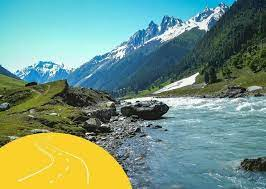
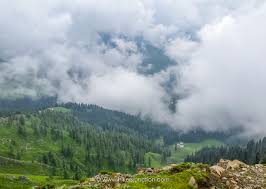

Exploring the ganga choti


Exploring Ganga Choti was an unforgettable adventure. From hiking along the rugged trails to witnessing the awe-inspiring vistas from the mountaintop, every moment was a thrill. The crisp mountain air, the whispering pines, and the distant sound of the river below created a symphony of nature. I immersed myself in the local culture, learning about the customs and traditions of the warm-hearted people who call this place home. The highlight of the journey was the stargazing experience - lying under the open sky, I felt like I could touch the stars. Ganga Choti is a place where the mountains touch the heavens, and every step leads to a new discovery. It's a haven for adventure seekers and nature enthusiasts, and I can't wait to return for more escapades in this mountain paradise.